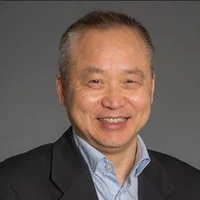
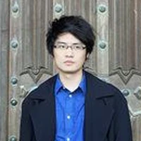
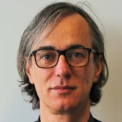
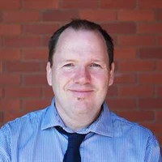
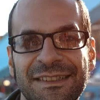
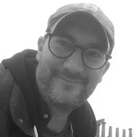
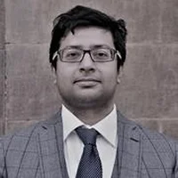
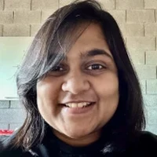
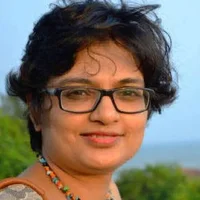
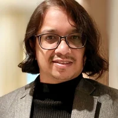

Collaborators
The BioFSI Lab works with research groups across the UK, Europe, North America and Asia — through joint grants, co-supervised students, joint publications and the events we organise together. Collaborators are listed by region; use the buttons below to highlight one kind of collaboration.
Collaborating organisations
Highlight:
United Kingdom
School of Engineering, The University of Edinburgh, UK
Postdoctoral advisor on the ERC project Dandidrone (2021–2023) Co-investigator on EPSRC Access to HPC grants (2022–23, 2023–24) Co-supervision of Doudou Huang (PhD) and Callum Bruce (MRes) Joint papers on porous plates and permeable disks (Theoretical and Computational Fluid Dynamics, Journal of Fluid Mechanics) 



Co-supervision of Dr. Puyu Shi (postdoc, IGNITE project), Harrison Buckner (PhD) and Lois Martin (PhD) Dept. of Mechanical and Aerospace Engineering, The University of Manchester, UK
Co-PI on the SPARC grant (2026–2028) Dept. of Aeronautics, Imperial College London, UK
Co-PI on the SPARC grant (2026–2028) Department of Engineering, King’s College London, UK
Mechanical Engineering, Edinburgh Napier University, UK
Back to collaborators ↑
Europe
PMMH, CNRS – ESPCI Paris, France
Co-investigator on the UK–France Collaborative Seed Funding (2023–2024) and the British Council Springboard programme with ESPCI Paris (2025) Co-investigator on the EuroMech Colloquium on Bio-Inspired Fluid–Structure Interaction (Vienna, 2025) Joint work on wave–structure interaction of submerged flexible plates (Marine 2025) 

Dept. of Aerospace and Mechanical Engineering, University of Liège, Belgium
Postdoctoral advisors: Prof. Dimitriadis as promoter of the WBI Excellence and FNRS postdoctoral fellowships (2020–2021), Prof. Terrapon as co-promoter of the FNRS fellowship (2021) Joint papers on non-smooth aeroelastic systems (Nonlinear Dynamics, 2022) and on leading-edge protuberances and stall (AIAA SciTech 2022) Department of Collective Behavior, Max Planck Institute of Animal Behavior, Konstanz, Germany
Partner in the British Council Going Global Springboard programme on collective flight and swimming for bio-inspired robotics (2026) 

School of Mechanical and Materials Engineering, University College Dublin, Ireland
Joint paper on the wake-induced response of vibro-impacting systems (Physics of Fluids, 2024; Editor’s featured article) Dept. of Automation, Faculty of Mechanical Engineering, Lublin University of Technology, Poland
Co-chair of the Flow Energy Harvesting mini-symposium at BBAA IX, University of Birmingham (2024) Visitor at the Bio-Inspired FSI Symposium 2026, University of Birmingham Back to collaborators ↑
North America
BioFrontiers Institute, University of Colorado Boulder, USA
Co-supervision of Paras Singh (MS, 2024–2026) Joint work on squid-inspired superpropulsion, flexible nozzles for pulsed-jet propulsion and interfacial locomotion of water striders School for Engineering of Matter, Transport and Energy, Arizona State University, USA
Co-supervision of Dr. Alex Cavanagh (PhD, 2020–2024) Joint papers on swept-wing vortex dynamics (Physics of Fluids, 2024) and flow-separation detection (AIAA Aviation 2022) Back to collaborators ↑
Asia
Dept. of Mechanical Engineering, IIT Kharagpur, India
Co-investigator on the SPARC grant (2026–2028) and the Royal Society International Exchange (2024–2026) Co-supervision of Aman Shukla (MTech, 2026) Joint paper on GPU-optimised immersed-boundary and overset-mesh methods (Computer Methods in Applied Mechanics and Engineering, 2026) 1st UK–India OpenFOAM Symposium, IIT Kharagpur (2024) Dept. of Mechanical Engineering, Jadavpur University, India
Co-PI on the SPARC grant (2026–2028) 

Dept. of Aerospace Engineering and Dept. of Applied Mechanics, IIT Madras, India
PhD advisors (2014–2019) Co-PIs on the IC&SR Innovative Project Grant (2018–2019) Co-PIs with Prof. Sarkar on the UoB–IITM Seed Grant (2026–2027) Long-standing joint work on flapping-wing aerodynamics, chaotic wakes, flow-induced vibration and energy harvesting (Journal of Fluid Mechanics, Physics of Fluids and others) Dept. of Mechanical Engineering, IIITDM Kancheepuram, India
Co-supervision of Dr. Dheeraj Tripathi (PhD, 2020–2024) Joint papers on stall flutter, synchronisation and stochastic aeroelasticity (Journal of Fluids and Structures, Chaos, Nonlinear Dynamics) Dept. of Mechanical Engineering, IIT Kanpur, India
Co-supervision of Muhammad Najvan and Brijesh K. Suman (MTech, 2020–2021) Dept. of Mechanical Engineering, IIT Bombay, India
Zhengzhou University, China
Joint papers on flow-induced vibration and piezoelectric energy harvesting (Smart Materials and Structures, 2021; Physics of Fluids, 2024) Harbin Institute of Technology, China
Dept. of Mechanical Systems Engineering, Tokyo University of Agriculture and Technology, Japan
Back to collaborators ↑